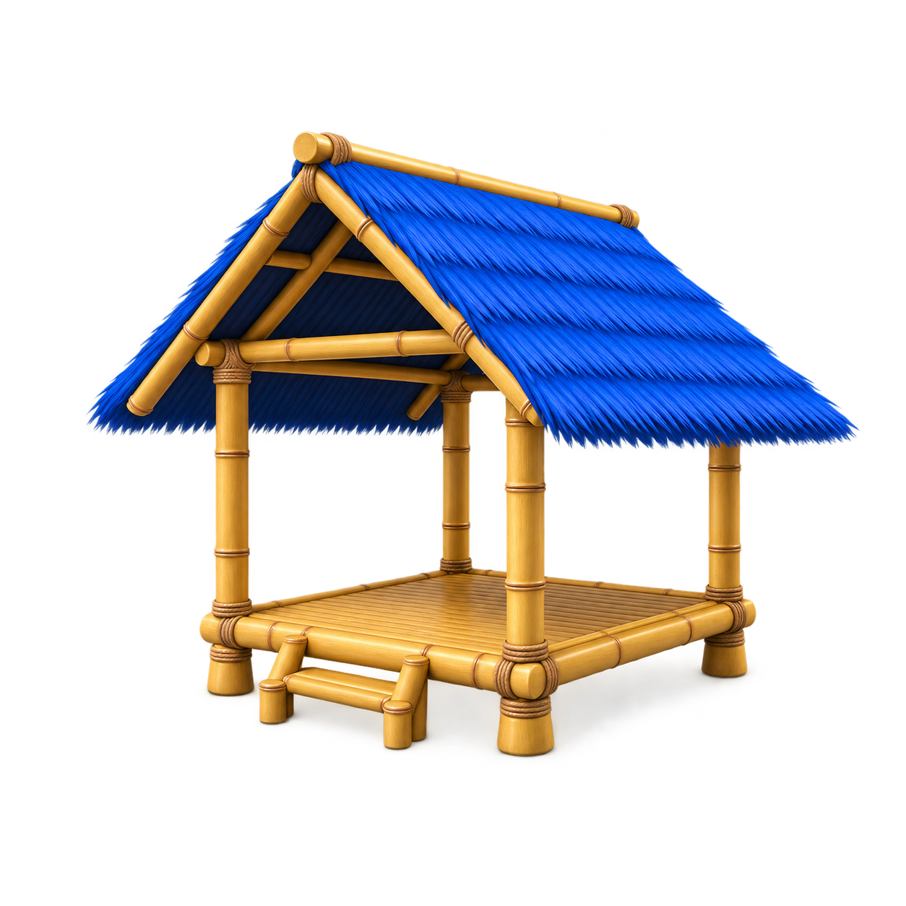
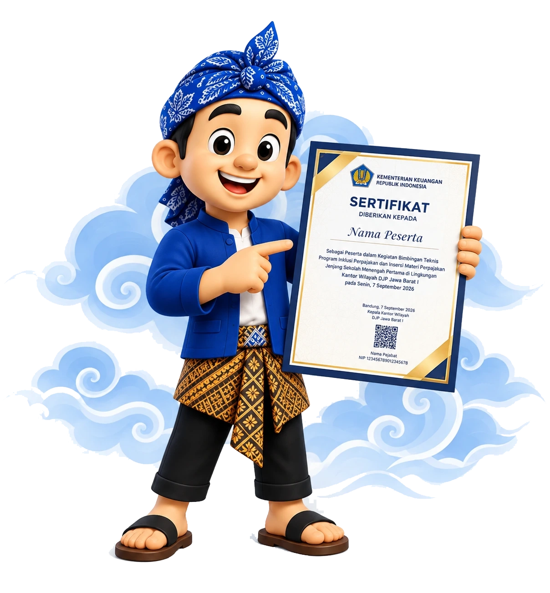

Saung terus
bertumbuh.
Layanan lainnya akan hadir di sini, mengikuti kebutuhan Anda.
Nantikan layanan berikutnya
Wilujeng sumping di

Ruang bersama untuk mengelola berbagai hal terkait sarana edukasi perpajakan. Pilih layanan yang Anda butuhkan.

Kelola penerbitan sertifikat edukasi secara cepat dan mudah.
Ruang pembuatan daftar hadir, pre-test, post-test, evaluasi, dan generate sertifikat otomatis untuk kegiatan Kelas Pajak.
Temukan jawaban singkat seputar akses layanan, akun satker, dan sertifikat.
Layanan lainnya akan hadir di sini, mengikuti kebutuhan Anda.
Pengelolaan Sertifikat Edukasi memerlukan login akun admin atau satuan kerja.
Pertanyaan umum
Mulai dari jawaban yang paling sering dibutuhkan.
Pilih Sertifikat Edukasi, lalu login dengan akun Anda. Buat atau pilih kegiatan, siapkan tes dan link peserta, kemudian kelola penerbitan sertifikat dari langkah Arsip, Riwayat & Sertifikat.
Gunakan akun satuan kerja yang sudah diberikan akses oleh admin. Pengelolaan kegiatan mengikuti satuan kerja yang terhubung dengan akun tersebut.
Hubungi admin pengelola untuk meminta reset password akun satker. Jika masih dapat login, gunakan menu Ganti Password di halaman admin.
Pilih kartu Sertifikat Kelas Pajak di atas untuk membuka layanan. Ikuti petunjuk pada halaman tujuan.